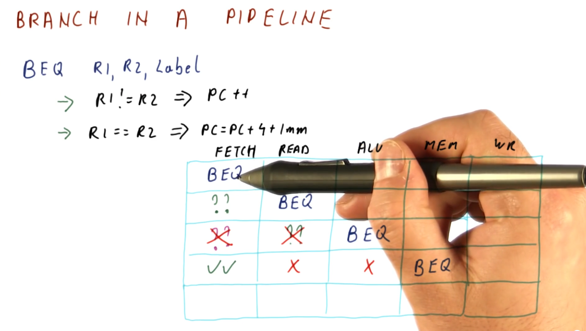

Branches
In the previous pipelining lesson, we saw the effects that hazards have on performance. Branches and jumps are common instructions that introduce control dependencies - our only solution can't just be to flush the processor pipeline each time a branch or jump is decoded. This lesson covers techniques used to effectively avoid hazards introduced by control dependencies.
Branch in a pipeline
The example provided below uses a 5 stage processor pipeline to demonstrate the
costs of incorrect branch prediction. The example explains how a branch
instruction works: is registers R1 and R2 are equal, the immediate value
represented by Label will be added to the program counter, PC, and execution
will begin at that location in memory. Otherwise, the program counter will be
incremented regularly - R1 and R2 are not equal.
In this scenario, a branch instruction enters the pipeline at cycle 1. The
branch instruction isn't evaluated until cycle 3 by the ALU. Meanwhile, two
instructions are fetched and decoded - these are represented by a ?? because
the instructions can be fetched either from memory directly after the branch
instruction or the landing location in memory if the branch instruction is
taken.
If we predict the outcome of the branch instruction correctly, the instructions that were fetched and decoded will execute immediately after the branch instruction leaves the pipeline - the branch will have taken 1 cycle to complete. If we predicted the outcome of the branch incorrectly and loaded the wrong instructions into the pipeline, these instructions will have to be flushed and the branch will have taken 3 cycles to complete.
